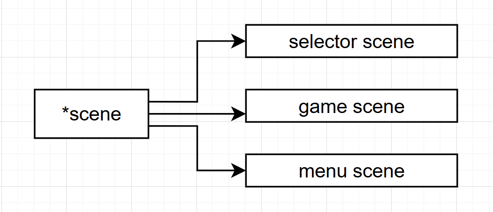

类的继承
在游戏开发中，我们对于一些GameObject都会创建基类，然后通过继承创建出不同的游戏对象，这有利于我们更好的管理角色或者其他对象。在植物明星大乱斗中，我们不论是子弹，玩家，场景都是通过创建基类再进一步继承创建相应的对象。
那今天就好好看看关于继承方面要注意的语法点
派生类的定义
class 派生类名：继承方式 基类名
{
新增加的成员定义；
}
class student: public people
{
};
唯一要说明的其实就是继承方式
- public
public（公有类）指的是对应的成员变量和函数可以被外界（全局函数，其他类的成员函数），自己的成员函数和友元直接调用
最直观的就是被外界调用（前提是这些在类内是public）
student 小明；
小明.height(); //函数返回
小明。height； //直接返回成员变量
//类似这样我直接可以通过实例化的对象直接调用内部的public函数或者成员变量
- private
private（私有类）就是仅仅只限于类内的成员函数和友元进行访问
- protected
protected是针对继承的一个方式，对与类来说，protected访问特性的成员变量和成员函数只限于被派生类的成员函数和友元函数
但是基类的成员函数和成员变量的访问特性也会随着继承方式变化
| 基于成员的访问特性 | public继承 | protected继承 | private继承 |
|---|---|---|---|
| public | public | protected | private |
| private | 不可访问 | 不可访问 | 不可访问 |
| protected | protected | protected | private |
其实成员的访问特性只针对当前的类自己，protected完全是针对继承子类一种访问特性
我们只需要关注继承过来的变量对于当前类的访问特性。
class base
{
private:
int a;
public:
void deal();
};
class base1:protected base
{
//这样继承，base的x对于base1就是不可访问（只限于base自己用），无法使用
//public继承过来则是protected类，说明可以继续往下继承
};
class base2:protected base1
{
//这个也是完全能调用deal
};
其实继承就是一个不断包含的过程，要区分的就是成员的访问特性对于当下的类是否可以使用
派生类对象的构造和析构
好像是在《游戏引擎架构》一书中，强调了其实对于类并不推荐使用构造函数和析构函数，而是推荐创建对应的函数去显示的调用。
因为构造函数和析构函数很容易无法确定构造和析构的顺序，对于复杂引擎的正确顺序的子系统启动很重要
但还是得了解不是吗？
继承的构造和析构其实也很好理解
对于子类的构造，优先级是这样的
- 基类的构造函数
- 自己里面包含的其他类的构造函数
- 然后是自己的构造函数
派生类的构造函数形式如下
student(int a,int b):people(a)
{
//在：后面给对应的基类传去对应的参数就行
}
注意：派生类的构造函数只需要关注自己的父类，如果自己父类也是继承的，对于student完全是不用考虑，在people的构造中会自己解决
析构函数的顺序则是相反
- 先执行自己的析构函数
- 再解决基类的析构函数
重定义基类的函数
当派生类和基类的成员函数定义原型完全相同时，此时子类会对父类的函数进行覆盖
class base
{
public:
int deal(){}
}
class base1:public base
{
public:
int deal(){}
}
//此时调用base1.deal则是用派生类定义的deal
//如果需要调用父类的那个函数
class base
{
public:
int deal()
{
base:deal(); //需要“基类名：函数名”来调用父类的重定义的函数
}
}
将派生类对象隐式转换为基类对象
1.将派生类对象赋予基类对象（默认的赋值，好像没啥用）
就是当派生类赋值给基类，基类只会接受派生类中基类的数据成员
base=base1；
2.基类指针指向派生类（很重要）
在植物明星大乱斗中，我们都是通过基类指针指向派生的对象
player指针指向豌豆和向日葵，scene指向不同的场景
基类的指针可以指向派生类，但是只能解释基类的成员，不能解释派生类新增的成员。
因此指向派生类的基类指针出发，只能访问派生类中的基类成员。
class base
{
public:
void deal()
{
}
};
class base1:public base
{
void play();
}
base* point=new base;
point->deal(); //这是可以的
point->play(); //这是不行的
注意：虽然不能指向派生类新增成员，但是如果是基于父类函数的重定义是完全可以的，这样就增加了灵活性。这样我们只需要在基类给好函数模板，再在子类上进行拓展
但是有一个问题，成员函数是这样，但是成员变量该怎么办，派生类对象肯定有自己特殊的成员变量？
Q&A：我们基于父类指针生成派生类对象，派生类对象的所有定义的都会生成，只是无法用指针访问，我们完全是可以在模板基础上拓展到函数里面去调用派生类特殊的成员变量
3.基类对象引用派生类的对象
引用事实上是一种隐式的指针。当用一个基类对象引用派生类对象时，相当于给基类部分取了一个名称，从这个基类对象看到的时派生类中的基类部分
base &point=new base1;
这样对基类引用的访问其实就是对派生类的基类的访问
注意：
- 派生类的指针不能指向基类
- 派生类的指针也不能接受基类的指针
base1 d,*dp;
base *bp=dp; //基类指针指向派生类，正确的
dp=bp; //但是即使基类指向派生类，也不能把基类指针的东西赋值给派生类指针，这是错误的
如果强制要转,使用强制类型转换（明确不会犯错）
dp=reinterpret_cast<Derived*> bp;
最后附上一段植物明星大乱斗子弹类的继承（删了一些）
基类
#ifndef _BULLET_H_
#define _BULLET_H_
#include "vector2.h"
#include "player_id.h"
#include "camera.h"
#include <graphics.h>
#include <functional>
extern bool is_debug;
class Bullet
{
public:
Bullet() = default;
~Bullet() = default;
void set_callback(std::function<void()> callback)
{
this->callback = callback;
}
void set_valid(bool flag)
{
valid = flag;
}
bool get_valid()const
{
return valid;
}
bool check_can_remove()const
{
return can_remove;
}
virtual void on_collide()
{
if (callback)
callback();
}
virtual bool check_collision(const Vector2& position, const Vector2& size)
{
return this->position.x + this->size.x / 2 >= position.x
&& this->position.x + this->size.x / 2 <= position.x + size.x
&& this->position.y + this->size.y / 2 >= position.y
&& this->position.y + this->size.y / 2 <= position.y + size.y;
}
virtual void on_update(int delta){}
virtual void on_draw(const Camera& camera)const
{
if (is_debug)
{
setfillcolor(RGB(255, 255, 255));
setlinecolor(RGB(255, 255, 255));
rectangle((int)position.x, (int)position.y, (int)position.x + size.x, (int)position.y + size.y);
solidcircle((int)(position.x + size.x / 2), (int)(position.y + size.y / 2), 5);
}
}
protected: //为了方便子类可以直接读取数据，所以选择protected
Vector2 size; //子弹尺寸
Vector2 position; //子弹位置
Vector2 velocity; //子弹速度
int damage = 10; //子弹伤害
bool valid = true; //子弹是否有效，有效要进行碰撞检测，无效说明碰撞发生，子弹开始播放销毁动画
bool can_remove = false; //子弹是否可以被移除
std::function<void()> callback; //子弹碰撞回调函数，因为子弹可以积攒玩家的能量
PlayerID target_id = PlayerID::P1; //子弹碰撞目标玩家ID，以免自己打自己
protected:
bool check_if_exceeds_screen()
{
return (position.x + size.x <= 0 || position.x >= getwidth()
|| position.y + size.y <= 0 || position.y >= getheight());
}
};
#endif // !_BULLET_H_
派生类
#ifndef _PEA_BULLET_H_
#define _PEA_BULLET_H_
#include "bullet.h"
#include "animation.h"
extern IMAGE img_pea;
extern Atlas atlas_pea_break;
class PeaBullet :public Bullet
{
public:
PeaBullet()
{
size.x = 64;
size.y = 64;
damage = 10;
animation_break.set_atlas(&atlas_pea_break);
animation_break.set_interval(100);
animation_break.set_loop(false);
animation_break.set_callback([&]() {can_remove = true; });
}
~PeaBullet() = default;
void on_collide()
{
Bullet::on_collide();
switch (rand() % 3)
{
case 0:
mciSendString(_T("play pea_break_1 from 0"), NULL, 0, NULL);
break;
case 1:
mciSendString(_T("play pea_break_2 from 0"), NULL, 0, NULL);
break;
case 2:
mciSendString(_T("play pea_break_3 from 0"), NULL, 0, NULL);
break;
}
}
void on_update(int delta)
{
position += velocity * (float)delta;
if (!valid)
animation_break.on_updata(delta);
if (check_if_exceeds_screen())
can_remove = true;
}
void on_draw(const Camera& camera)const
{
if (valid)
putimage_alpha(camera, (int)position.x, (int)position.y, &img_pea);
else
animation_break.on_draw(camera, (int)position.x, (int)position.y);
Bullet::on_draw(camera);
}
private:
Animation animation_break;
};
#endif // !_PEA_BULLET_H_